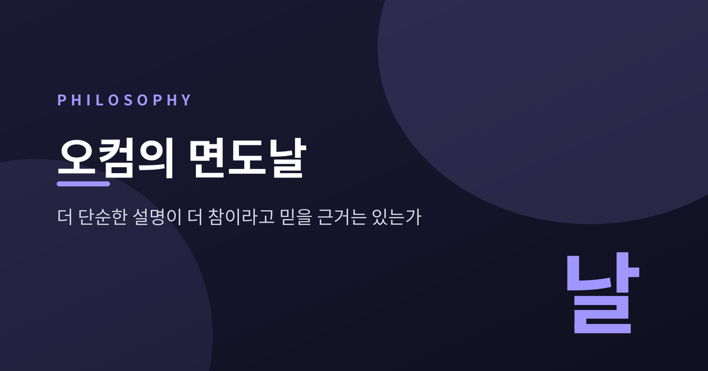

이번 글에서는 오컴의 면도날과 단순성의 원리를 정리해 보겠습니다. 널리 인용되는 문장 하나가 정작 오컴의 글에는 없다는 사실에서 출발해, 과학이 이 원리를 실제로 어떻게 썼는지, 그리고 현대 철학과 통계학이 이를 정당화하려 어디까지 갔는지를 따라가려 합니다.
먼저 결론을 세 줄로 적겠습니다.
가장 널리 알려진 형태는 라틴어 "Entia non sunt multiplicanda praeter necessitatem"입니다. 존재자를 필요 이상으로 늘리지 말라는 뜻이지요.
그런데 스탠퍼드 철학백과의 오컴 항목은 이렇게 못 박습니다. 그 정서는 분명 오컴의 것이지만, "이 특정한 정식은 그의 텍스트 어디에도 없다"고요. 인터넷 철학백과도 오컴이 "그 대중적 정식을 사용하지 않는다"고 적습니다.
출처는 따로 있습니다. 1918년 손번(W. M. Thorburn)이 학술지 『마인드』에 발표한 논문이 이 문제를 파헤쳤습니다. 결론은 이렇습니다. 이 문구는 중세의 것이 아니라 1639년 스코투스주의 주석가였던 코크의 존 폰스가 사실상 현재 형태로 만들어낸 것입니다. 폰스 자신은 이를 스콜라 학자들이 흔히 쓰는 "통속적 공리"라고만 적었고, 누구의 것인지는 밝히지 않았습니다.
손번은 그 "스콜라 학자들"에 오컴도 스코투스도 아퀴나스도 포함되지 않는다고 단언합니다.
오컴이 실제로 쓴 문장들은 따로 있습니다.
그가 되풀이해 쓴 것은 Pluralitas non est ponenda sine necessitate(필요 없이 복수를 상정해서는 안 된다), 그리고 Frustra fit per plura quod potest fieri per pauciora(더 적은 것으로 될 일을 더 많은 것으로 하는 건 헛되다)였습니다.
미묘하지만 결정적인 차이가 있습니다. 후대의 문구는 존재자(entia)를 말하고, 오컴의 문구는 복수(pluralitas)를 말합니다. 세계에 무엇이 있느냐가 아니라, 설명에 무엇을 끌어들이느냐의 문제였던 셈입니다.
오컴의 가장 완전한 정식은 이렇습니다. 어떤 복수도 이성이나 경험, 혹은 틀릴 수도 그르칠 수도 없는 권위로 입증되지 않는 한 상정되어서는 안 된다.
여기서 방향이 뒤집힙니다. 스탠퍼드 철학백과의 설명을 그대로 옮기면, 면도날은 "단지 조심스러운 방법론적 원리"이며, 저 조건 중 하나라도 충족되면 "덜 절약적인 주장이 참이라고 생각할 좋은 이유를 갖게 된다"는 것입니다.
즉 면도날은 기본값을 정하는 규칙입니다. 단순한 쪽이 언제나 참이라는 법칙이 아닙니다.
동기도 형이상학적이지 않았습니다. 인터넷 철학백과의 요약이 명료합니다. "근본적으로 오컴이 단순성을 옹호하는 것은 오류의 위험을 줄이기 위해서다. 모든 가설은 틀릴 가능성을 안고 있다. 더 많은 가설을 받아들일수록 위험은 커진다."
세계가 최대로 단순하다는 독법은 오히려 차단됩니다. 전능한 신을 인정하는 신학자에게, 세계가 최대로 단순하다는 가정은 그 자체로 의심스러운 것이니까요. 실제로 오컴은 삼위일체와 성육신, 성찬례에 대해서는 관계적 존재자를 인정합니다. 자연적 인식 능력만으로는 상정할 이유가 없는 것들을, 신학적 근거로 받아들인 것입니다.
면도날이 그의 손에서 접힌 자리입니다.
한 가지 더 정정할 것이 있습니다. 면도날은 그의 보편자 논박 무기가 아니었습니다. 두 백과사전이 함께 지적하듯, 그는 실재론을 면도날로 자르지 않았습니다. 아예 정합적이지 않다고 보았기 때문입니다. 면도날이 주로 쓰인 자리는 아리스토텔레스의 열 개 범주를 실체와 질, 둘로 줄이는 작업이었습니다.
런던의 그레이프라이어스 수도원에서 오컴과 함께 지낸 월터 채턴은 정반대 규칙을 세웠습니다. 그는 이를 "나의 규칙"이라 불렀습니다.
"어떤 긍정 명제를 검증하는 데 세 가지로 충분하지 않다면, 넷째를 상정해야 하고, 그렇게 계속 나아가야 한다."
칸트도 비슷한 말을 남겼습니다. Entium varietates non temere esse minuendas — 존재자의 다양성을 경솔하게 줄여서는 안 된다.
흥미로운 건 이 둘이 실은 모순되지 않는다는 점입니다. 스탠퍼드 철학백과는 절약과 설명적 충분성이 "서로를 견제하는 평형추"로 작동한다고 봅니다. 한쪽은 설명 부족을 벌하고, 다른 쪽은 존재론적 과잉을 벌합니다.
그리고 이렇게 덧붙입니다. 이 중세의 대립은 "단순성과 적합도 사이의 올바른 균형을 둘러싼 오늘날 통계학자들의 논쟁을 역사적으로 반향한다"고요.
700년 전의 논쟁이 지금 모형 선택 이론에서 되풀이되고 있는 셈입니다.
여기서 용어를 갈라야 논의가 진전됩니다.
스탠퍼드 철학백과는 단순성을 둘로 쪼갭니다. 우아함은 이론의 기본 원리가 몇 개나 되고 얼마나 간결한지를 잽니다. 절약은 이론이 몇 종류의 존재자를 상정하는지를 잽니다. 간단히 말하면 이론의 단순함과 세계의 단순함입니다.
그리고 이 둘은 서로 당깁니다. 존재자를 더 상정하면 법칙이 간단해지고, 존재자를 줄이면 법칙이 복잡해집니다. 해왕성이 좋은 예입니다. 행성 하나를 더 상정한 덕분에, 천체역학의 법칙은 건드리지 않아도 되었습니다.
이 구분을 놓치면 논쟁이 엉킵니다. "오컴의 면도날이 승리한 사례"로 꼽히는 것들 상당수가 실은 절약이 아니라 우아함의 사례이기 때문입니다.
세 가지 사례를 보겠습니다.
코페르니쿠스. 흔히 프톨레마이오스는 원 80개, 코페르니쿠스는 34개라고들 합니다. 과학사가 오언 깅거리치는 이 통념을 정면으로 반박했습니다. 코페르니쿠스는 성숙한 체계에서 경도 장치를 재배치해 원 여섯 개를 줄였지만, 세차와 떨림을 다루는 장치와 내행성의 더 복잡한 위도 체계를 새로 들였습니다. 결과적으로 양쪽 다 서른 개가 넘는 원을 썼고, 경제성에서 우열을 가리기 어렵습니다. 초기에는 수치적 정확도조차 더 낫지 않았습니다. 깅거리치는 두 체계의 단순함과 복잡함이라는 대비가 "전적으로 허구"라고 적습니다.
에테르. 특수상대성이론이 에테르를 잘라냈다는 이야기는 면도날의 대표 사례로 자주 인용됩니다. 그런데 스탠퍼드 철학백과는 이를 증거로 삼기 어렵다고 봅니다. 로런츠와 푸앵카레의 이론은 물리적 동기가 없는 임시 땜질이 여럿 필요했고, 무엇보다 에테르는 "여분의 존재자일 뿐 아니라 검출 불가능한 여분의 존재자"였습니다. 이긴 이유가 단순성인지 검출불가능성인지 구별되지 않습니다.
생물지리학. 이쪽이 오히려 더 선명한 시험대입니다. 자연 장벽으로 나뉜 지역은 서로 다른 종을 갖는다는 뷔퐁의 법칙에 예외가 있었습니다. 다윈과 월리스는 해류와 바람과 유빙에 의한 드문 분산으로 설명했고, 확장론자들은 지금은 사라진 육교를 상정했습니다. 육교 가설이 밀린 결정적 이유는, 새로운 분포 이상이 나올 때마다 매번 새 육교를 그려 넣어야 했다는 점입니다.
절약적인 이론은 설명 부족으로 비판받고, 덜 절약적인 이론은 방만함으로 비판받습니다. 남는 물음은 언제나 하나입니다. 단순성과 적합도 사이의 균형점을 어디에 둘 것인가.
20세기 들어 이 물음은 철학에서 통계학으로 옮겨 갑니다.
출발점은 충돌이었습니다. 해럴드 제프리스는 "더 단순한 법칙이 더 큰 사전확률을 갖는다"고 주장했습니다. 포퍼는 그것이 확률 공리에 어긋난다고 반박합니다. 직선족은 이차곡선족의 부분집합이니, 확률은 오히려 직선족이 더 낮아야 한다는 것입니다. 그래서 포퍼는 정반대로 갑니다. 단순한 가설이 좋은 이유는 확률이 높아서가 아니라 반증하기 쉬워서라고요.
베이즈주의는 다른 길을 찾았습니다. 제퍼리스와 버거가 1992년 『아메리칸 사이언티스트』에 쓴 논문의 논지는 이렇습니다. 면도날은 별도의 원리가 아니라 베이즈 추론의 귀결이다. 복잡한 모형은 예측 확률질량을 넓게 얇게 흩뿌립니다. 무엇이든 설명할 수 있다는 건, 실제로 관측된 그 데이터에 배정한 확률이 낮다는 뜻입니다. 단순한 모형은 질량을 좁게 모읍니다. 맞히면 크게 보상받습니다. 이 자동 벌점을 오컴 인자라 부릅니다.
AIC와 BIC는 단순성을 자유 매개변수의 개수로 환산합니다. 적합도만 따지면 곡선이 모든 점을 지나도록 휘어버리는 과적합이 일어나므로, 매개변수 개수에 벌점을 매겨 균형을 잡습니다. BIC는 표본이 커질수록 단순성에 더 큰 가중치를 줍니다. 두 기준이 충돌하는 이유에 대해 포스터와 소버는 목표가 다르다고 설명합니다. 하나는 예측 정확도를, 다른 하나는 참일 확률을 겨냥한다는 것입니다.
최소기술길이(MDL)는 1978년 리사넨이 제안했습니다. 학습을 압축으로 봅니다. 최선의 이론은 이론 자체를 적는 데 드는 비트 수와, 그 이론의 도움을 받아 데이터를 적는 데 드는 비트 수의 합을 최소화하는 이론입니다. 이론이 복잡해지면 앞이 커지고, 이론이 빈약하면 잔차를 일일이 적어야 해서 뒤가 커집니다. 합이 최소가 되는 지점이 곧 균형점입니다. 사람이 벌점을 임의로 정하지 않아도 된다는 점이 이 접근의 미덕입니다. 리사넨은 계산 불가능한 콜모고로프 복잡도를 계산 가능한 형태로 바꿔놓았습니다.
켈리의 효율성 논증은 전제를 아예 바꿉니다. 단순한 가설이 참일 가능성이 높다는 주장을 포기하고, 진리에 도달하는 경로를 따집니다. 오컴 효율성 정리에 따르면 면도날을 지키는 과학자는 그러지 않는 과학자보다 의견을 덜, 그리고 더 일찍 번복합니다. 검출되기 전까지는 없다고 추측하라는 규칙은 많아야 한 번 번복하면 됩니다. 반대 규칙은 두 번 번복해야 하는 경우가 생깁니다.
정리하면, 예전에는 "단순한 것이 참에 가깝다"고 말했고, 지금은 "단순한 것에서 출발해야 참에 빨리 도달한다"고 말합니다.
첫째, 언어에 기댑니다. 한 언어에서 매우 복잡한 가설이 다른 언어에서는 아주 단순할 수 있습니다. 굿먼의 '그루' 역설이 고전적 사례입니다. 단순성이 기술 방식에 의존한다면, 그것은 세계에 관한 사실이 아닙니다. 정보이론 기법으로 일부 통사적 척도가 언어 선택과 점근적으로 무관함을 보일 수 있다는 부분적 반론은 있습니다만, 완전한 해소는 아닙니다.
둘째, 무엇을 세느냐가 답을 정합니다. 소버가 드는 예가 날카롭습니다. 심리적 이기주의는 궁극적 욕구의 종류는 더 적게 상정하지만, 인과적 믿음은 더 많이 상정합니다. 무엇을 세고 어떻게 세느냐에 따라 어느 쪽이 더 절약적인지가 달라집니다. 그리고 그것을 정해주는 중립적 규칙은 없습니다.
셋째, 전역적 정당화가 없습니다. 소버의 입장이 단호합니다. 절약의 정당성은 특정 연구 맥락에서 그 분야의 사후적 고려에 따라 서거나 무너지며, "한 맥락에서 절약을 합리적으로 만드는 것이 다른 맥락에서 절약이 중요한 이유와 아무 공통점이 없을 수 있다"는 것입니다.
넷째, 반례가 있습니다. 스탠퍼드 철학백과가 드는 예는 소박하지만 아픕니다. 산소 분자는 원자 하나가 아니라 둘로 이루어져 있습니다. 더 단순한 쪽이 틀렸습니다. 손번은 1917년 동위원소 발견을 들어 같은 말을 했습니다. 그냥 '납'이라 불리던 것이 알고 보니 한없이 복잡한 조성이었다고요.
멘델의 사례도 곱씹을 만합니다. 그는 일곱 형질에서 우성 대 열성의 비가 평균 2.98 대 1로 나오자 참값을 3 대 1로 잡았습니다. 이 반올림은 어떤 설명 모형을 세우기 전에 이루어졌습니다. 그러니 이론적 고려가 시킨 일이 아닙니다. 단순성을 매개변수 개수로 정의하는 접근은 이런 '깔끔한 정수비 선호'를 아예 포착하지 못합니다.
아예 반대 방향의 원리도 있습니다. 충만성의 원리는 가능한 것은 실제로 존재한다고 말합니다. 1931년 디랙은 자기 홀극이 양자역학과 양립 가능하다는 점을 보이고, 요구되지는 않는데도 그 존재를 주장했습니다. "자연이 그것을 쓰지 않았다면 놀라운 일일 것"이라면서요. 1969년의 타키온은 특수상대성이론과 양립 가능하다는 이유 하나만으로 그 존재가 상정되었습니다. 면도날과 정면으로 충돌하는 발상입니다.
그리고 토머스 쿤의 비관이 남아 있습니다. 단순성 같은 이론적 덕목에 각 과학자가 얼마나 무게를 두는지는 "순전히 취향의 문제이며 합리적으로 해결되지 않는다"는 것입니다.
끝으로 한 마디만 더 드리겠습니다.
손번이 1918년에 남긴 경고가 이 글에서 가장 오래 남습니다. 테네만과 해밀턴의 부주의가 "건전한 방법론 규칙을 형이상학적 교리로 바꿔버렸다"는 문장입니다. 그는 이렇게 덧붙였습니다. 탐구 대상을 늘려 연구를 복잡하게 만드는 것은 어리석은 일이지만, 우리는 우주의 궁극적 구성에 대해 너무 적게 알고 있어서 그것이 보이는 것보다 훨씬 복잡할 수 없다고 단정할 수 없다고요.
스탠퍼드 철학백과의 단순성 항목에는 결론 절이 없습니다. 귀납 논의로 끝나고 곧장 참고문헌으로 넘어갑니다. 아프리오리 정당화는 정당화가 없는 것과 구별하기 어렵고, 자연주의는 실제 과학에서 원리를 읽어내는 데 실패하며, 통계적 정당화는 존재론적 절약에는 아무 적용력이 없습니다. 정의하기 쉬운 쪽은 정당화가 어렵고, 정당화가 진전된 쪽은 정의가 어렵습니다.
그러니 면도날은 진리 탐지기가 아닙니다. 아직 완벽한 정당화는 없습니다. 다만 그것이 무엇인지는 이제 분명해 보입니다.
"덜 믿기 위한 규칙이지, 덜 존재한다는 주장이 아니다."
세계가 단순하냐고 물으신다면, 저는 모른다고 답하겠습니다. 다만 모르는 채로 어디서부터 시작할지는, 오컴이 이미 알려주었다고 생각합니다.